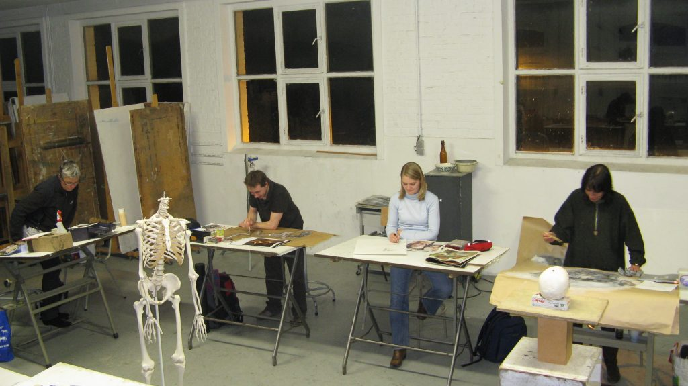
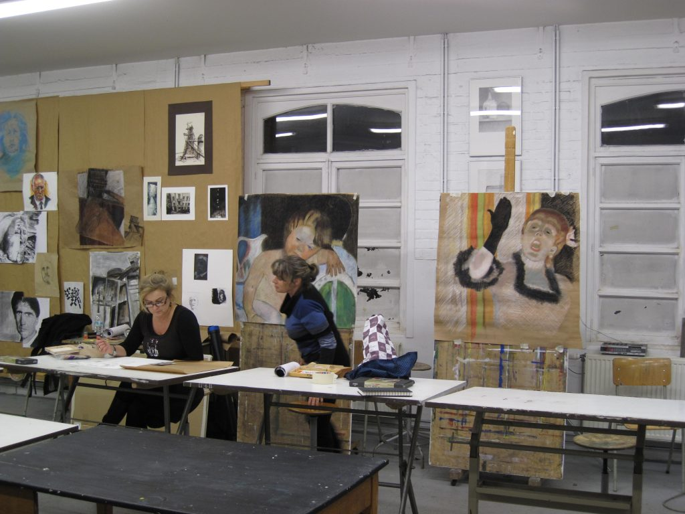
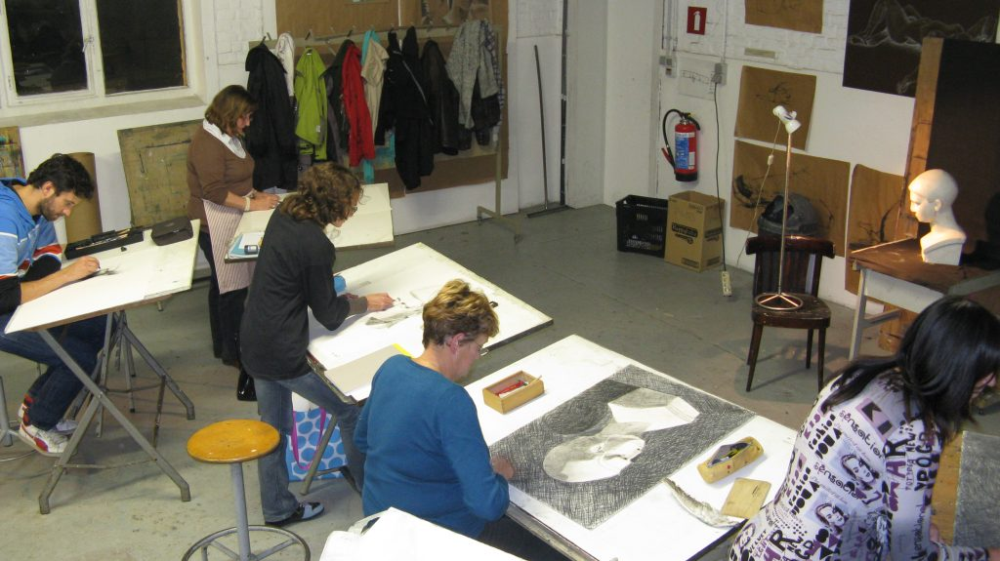
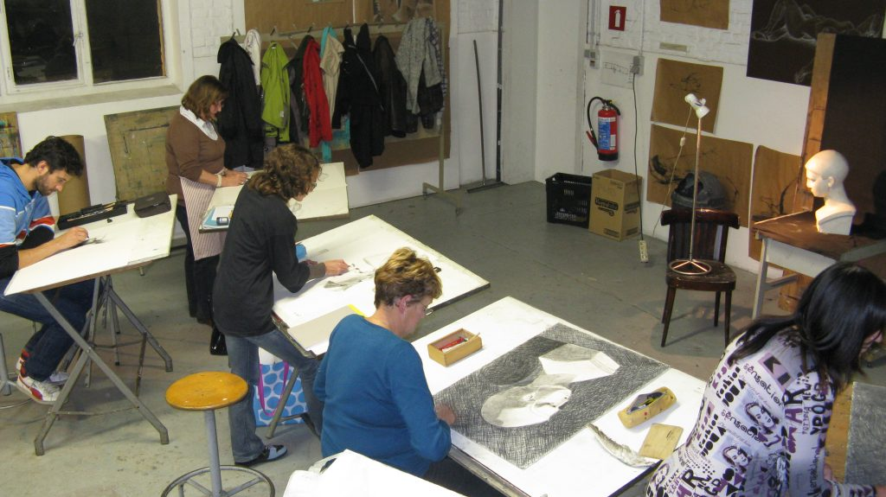
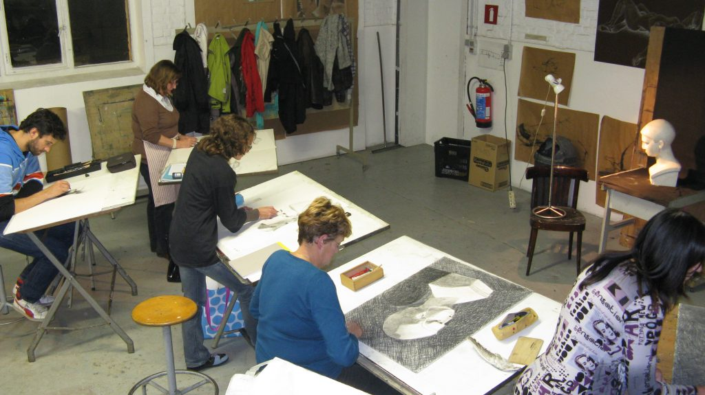

ATELIER IN DE KIJKER: TEKENKUNST
Ons laatste atelier voor volwassenen, Tekenkunst. Onderleiding van Natasha Dimovska, Johan Clocheret en Gery Desmet. Inschrijven kan nog tot 30 september.
Vrijwel elke beeldende reis begint op een blad papier: een idee, een krabbel, een schets.
Tekenkunst kan opgesplitst worden in enerzijds het waarnemingstekenen waarbij de kunstenaar tekent naar de zichtbare werkelijkheid en tracht
natuurgetrouw weer te geven wat hij ziet, en anderzijds verbeeldingstekenen
het tekenen van wat de kunstenaar aanvoelt, hoe hij de realiteit op dat ogenblik ervaart of wat hij er in ziet, danwel geconstrueerde, abstracte of
geabstraheerde tekenkunst. In het atelier verwerf je verschillende tekenkundige vaardigheden.
Je verkent daarbij permanent de grenzen van het medium door de relatie tussen kijken, denken en voelen zichtbaar te maken. En langzaam ontwikkel je zo een persoonlijke beeldtaal.


 

